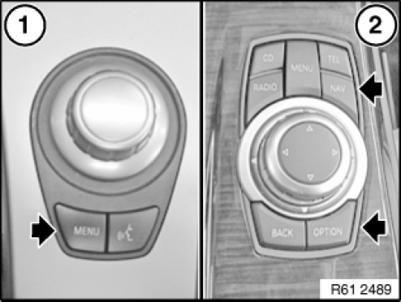
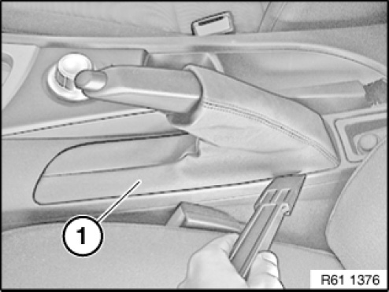
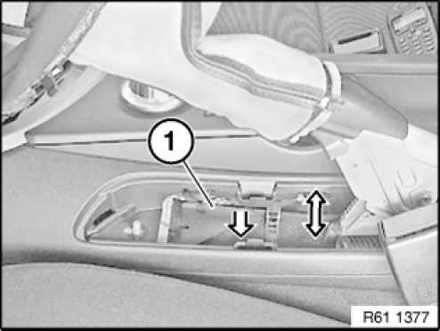
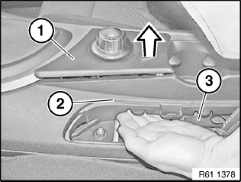
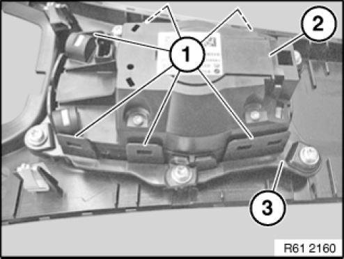

61 31 195 Removing and Installing (Replacing) Front Controller (From 09/2008)
61 31 195 Removing And Installing (Replacing) Front Controller (From 09/2008)
Special tools required:

IMPORTANT:
Risk of damage.
Before dismantling it is imperative to note whether the controller is installed with a version before or after 09/2008.

NOTE: The number of buttons and shape of controller can vary depending on vehicle type.
Before 09/2008: Controller (1) has buttons on bottom only.
After 09/2008: Controller (2) has buttons top and bottom.
NOTE: These repair instructions describe the removal and installation (replacement) of controller (2).
IMPORTANT:
Risk of damage.
The button for the controller must not be removed.

Lever gaiter (1) out of centre console with special tool 00 9 317 and slide upwards.

Press cable retaining plate (1) downwards to gain access to controller from below.

IMPORTANT:
Sharp edges on centre console and on cable straps may cause injury.
Carry out this operation with care.
Insert hand between cable retaining plate (3) and centre console (2).
Press controller (1) upwards out of latch mechanism.
Disconnect associated plug connection and remove controller (1).

IMPORTANT: Risk of damage.
Carefully raise catches (1) on controller holder (3) and remove controller (2) towards top.
Installation note:
Make sure controller (2) is correctly engaged in controller holder (3).

Replacement:
Carry out vehicle programming/encoding.